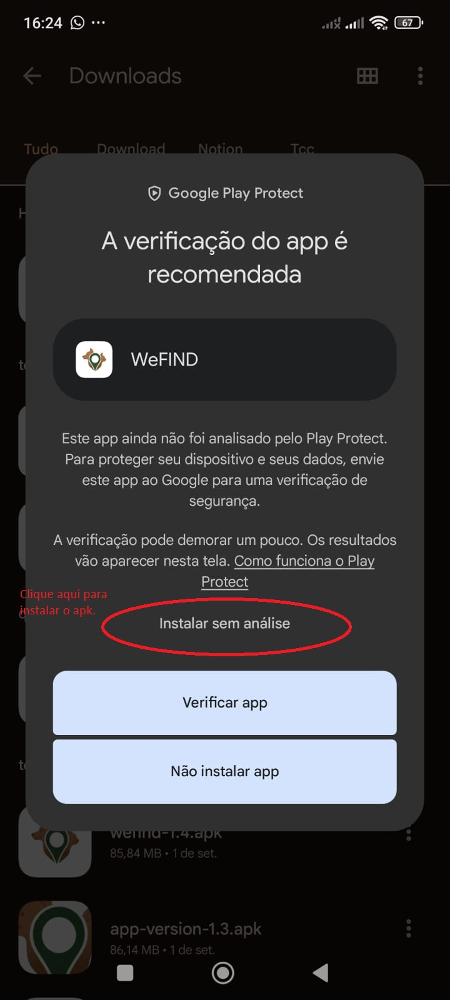

Guia de instalação e teste
Instale o WeFIND no Android
O aplicativo é distribuído como APK para fins de avaliação. Baixe o arquivo diretamente no celular Android e siga os passos abaixo para instalar e explorar os principais recursos.
Como instalar
- Baixe o APKUse o botão “Baixar APK” nesta página pelo próprio celular Android.
- Abra o arquivo baixadoAcesse a notificação do download ou a pasta Downloads do aparelho e toque no arquivo.
- Permita a instalaçãoSe aparecer a mensagem de segurança, abra Configurações e ative “Permitir desta fonte” para o navegador ou gerenciador de arquivos.
- Confirme a instalaçãoSe o Play Protect recomendar uma verificação, leia o aviso e prossiga somente se você confia na origem do APK.
- Conceda as permissõesAo abrir o aplicativo, permita o acesso à localização e às notificações para utilizar o mapa e receber avisos.
Atenção durante a instalação
Sobre o aviso do Play Protect
Como o WeFIND é distribuído diretamente por APK e ainda não está na Google Play Store, o Android pode exibir um aviso de segurança. Essa mensagem é esperada nesse tipo de instalação.
Leia a mensagem com atenção e prossiga somente quando tiver certeza de que o arquivo foi baixado da fonte correta.

O que testar no aplicativo
- Mapa interativo com ocorrências próximas e filtros de busca.
- Cadastro de publicações com foto e localização.
- Visualização de detalhes e compartilhamento de cartaz.
- Registro de avistamentos vinculados às publicações.
- Mensagens privadas entre usuários e notificações.
Acesso para avaliação
Credenciais da conta de teste
Use estes dados para explorar o aplicativo sem precisar criar uma conta:
- Usuário
- usuario-teste
- E-mail alternativo
- usuario-teste@gmail.com
- Senha
- Teste123
Se preferir, crie uma conta própria pelo botão “Cadastre-se”.